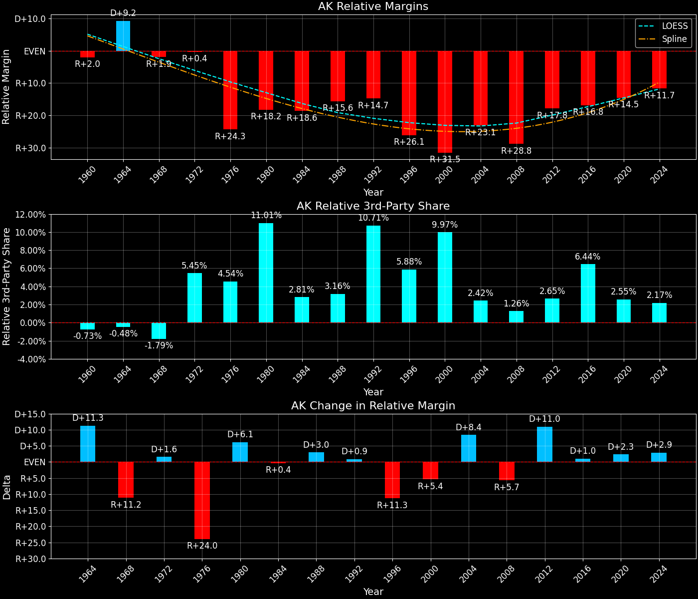
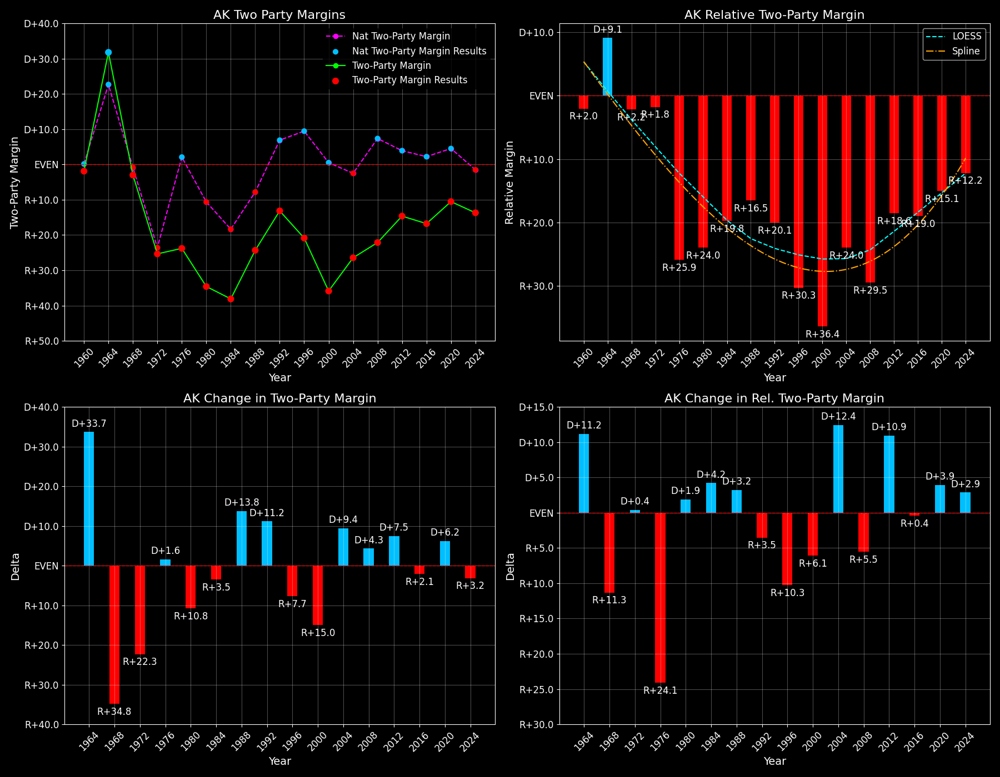

Alaska (AK) — Statewide

Margins · 3rd-Party share · Pres. deltas

Relative margins · Relative 3rd-Party · Rel. deltas
Alaska (AK) — Total Data
| Year | D | R | State Margin | Nat. Margin | Rel. Margin | Total votes | EVs |
|---|---|---|---|---|---|---|---|
| 1960 | 29,809(49.1%) | 30,953(50.9%) | R+1.9 | D+0.2 | R+2.0 | 60,762 | 3 |
| 1964 | 44,329(65.9%)(Δ 14,520) | 22,930(34.1%)(Δ -8,023) | D+31.8(Δ D+33.7) | D+22.6(Δ D+22.4) | D+9.2(Δ D+11.3) | 67,259(Δ 6,497) | 3 |
| 1968 | 35,411(42.6%)(Δ -8,918) | 37,600(45.3%)(Δ 14,670) | R+2.6(Δ R+34.5) | R+0.7(Δ R+23.3) | R+1.9(Δ R+11.2) | 83,035(Δ 15,776) | 3 |
| 1972 | 32,967(34.6%)(Δ -2,444) | 55,349(58.1%)(Δ 17,749) | R+23.5(Δ R+20.9) | R+23.1(Δ R+22.4) | R+0.4(Δ D+1.6) | 95,219(Δ 12,184) | 3 |
| 1976 | 44,058(35.7%)(Δ 11,091) | 71,555(57.9%)(Δ 16,206) | R+22.3(Δ D+1.3) | D+2.1(Δ D+25.2) | R+24.3(Δ R+24.0) | 123,574(Δ 28,355) | 3 |
| 1980 | 41,842(26.4%)(Δ -2,216) | 86,112(54.3%)(Δ 14,557) | R+27.9(Δ R+5.7) | R+9.7(Δ R+11.8) | R+18.2(Δ D+6.1) | 158,445(Δ 34,871) | 3 |
| 1984 | 62,007(29.9%)(Δ 20,165) | 138,377(66.7%)(Δ 52,265) | R+36.8(Δ R+8.8) | R+18.2(Δ R+8.5) | R+18.6(Δ R+0.4) | 207,605(Δ 49,160) | 3 |
| 1988 | 72,584(36.3%)(Δ 10,577) | 119,251(59.6%)(Δ -19,126) | R+23.3(Δ D+13.5) | R+7.7(Δ D+10.5) | R+15.6(Δ D+3.0) | 200,116(Δ -7,489) | 3 |
| 1992 | 78,294(30.3%)(Δ 5,710) | 102,000(39.5%)(Δ -17,251) | R+9.2(Δ D+14.1) | D+5.6(Δ D+13.3) | R+14.7(Δ D+0.9) | 258,506(Δ 58,390) | 3 |
| 1996 | 80,380(33.3%)(Δ 2,086) | 122,746(50.8%)(Δ 20,746) | R+17.5(Δ R+8.4) | D+8.5(Δ D+3.0) | R+26.1(Δ R+11.3) | 241,620(Δ -16,886) | 3 |
| 2000 | 79,004(27.7%)(Δ -1,376) | 167,398(58.6%)(Δ 44,652) | R+31.0(Δ R+13.4) | D+0.5(Δ R+8.0) | R+31.5(Δ R+5.4) | 285,560(Δ 43,940) | 3 |
| 2004 | 111,025(35.5%)(Δ 32,021) | 190,889(61.1%)(Δ 23,491) | R+25.5(Δ D+5.4) | R+2.5(Δ R+3.0) | R+23.1(Δ D+8.4) | 312,598(Δ 27,038) | 3 |
| 2008 | 123,594(37.9%)(Δ 12,569) | 193,841(59.4%)(Δ 2,952) | R+21.5(Δ D+4.0) | D+7.3(Δ D+9.7) | R+28.8(Δ R+5.7) | 326,197(Δ 13,599) | 3 |
| 2012 | 122,640(40.8%)(Δ -954) | 164,676(54.8%)(Δ -29,165) | R+14.0(Δ D+7.5) | D+3.9(Δ R+3.4) | R+17.8(Δ D+11.0) | 300,495(Δ -25,702) | 3 |
| 2016 | 116,454(36.6%)(Δ -6,186) | 163,387(51.3%)(Δ -1,289) | R+14.7(Δ R+0.7) | D+2.1(Δ R+1.8) | R+16.8(Δ D+1.0) | 318,608(Δ 18,113) | 3 |
| 2020 | 153,778(42.8%)(Δ 37,324) | 189,951(52.8%)(Δ 26,564) | R+10.1(Δ D+4.7) | D+4.5(Δ D+2.4) | R+14.5(Δ D+2.3) | 359,530(Δ 40,922) | 3 |
| 2024 | 140,026(41.4%)(Δ -13,752) | 184,458(54.5%)(Δ -5,493) | R+13.1(Δ R+3.1) | R+1.5(Δ R+5.9) | R+11.7(Δ D+2.9) | 338,177(Δ -21,353) | 3 |
Column explanations
- Δ
- Change (delta) in the value from the previous election year.
- Year
- Election year.
- D
- Number of votes for the Democratic candidate (raw count(pct%)).
- R
- Number of votes for the Republican candidate (raw count(pct%)).
- State Margin
- Margin between the two major-party candidates, including third-party votes ((D - R)/total).
- Nat. Margin
- The national presidential margin for that year, including third-party votes ((D_total - R_total)/total_votes).
- Rel. Margin
- The presidential margin relative to the national presidential margin (Margin - Nat. Margin).
- Total votes
- Total voter turnout or ballots cast (when provided).
- EVs
- Number of electoral votes allocated to this state or unit.
Alaska (AK) — Third-Party Data
| Year | D | R | Other votes | State 3rd-Party Share | 3rd-Party Nat. Share | 3rd-Party Rel. Share |
|---|---|---|---|---|---|---|
| 1960 | 29,809(49.1%) | 30,953(50.9%) | 0(0.0%) | 0.00% | 0.73% | -0.73% |
| 1964 | 44,329(65.9%)(Δ 14,520) | 22,930(34.1%)(Δ -8,023) | 0(0.0%) | 0.00% | 0.48% | -0.48% |
| 1968 | 35,411(42.6%)(Δ -8,918) | 37,600(45.3%)(Δ 14,670) | 10,024(12.1%) | 12.07% | 13.86% | -1.79% |
| 1972 | 32,967(34.6%)(Δ -2,444) | 55,349(58.1%)(Δ 17,749) | 6,903(7.2%) | 7.25% | 1.80% | 5.45% |
| 1976 | 44,058(35.7%)(Δ 11,091) | 71,555(57.9%)(Δ 16,206) | 7,961(6.4%) | 6.44% | 1.90% | 4.54% |
| 1980 | 41,842(26.4%)(Δ -2,216) | 86,112(54.3%)(Δ 14,557) | 30,491(19.2%) | 19.24% | 8.24% | 11.01% |
| 1984 | 62,007(29.9%)(Δ 20,165) | 138,377(66.7%)(Δ 52,265) | 7,221(3.5%) | 3.48% | 0.67% | 2.81% |
| 1988 | 72,584(36.3%)(Δ 10,577) | 119,251(59.6%)(Δ -19,126) | 8,281(4.1%) | 4.14% | 0.98% | 3.16% |
| 1992 | 78,294(30.3%)(Δ 5,710) | 102,000(39.5%)(Δ -17,251) | 78,212(30.3%) | 30.26% | 19.55% | 10.71% |
| 1996 | 80,380(33.3%)(Δ 2,086) | 122,746(50.8%)(Δ 20,746) | 38,494(15.9%) | 15.93% | 10.05% | 5.88% |
| 2000 | 79,004(27.7%)(Δ -1,376) | 167,398(58.6%)(Δ 44,652) | 39,158(13.7%) | 13.71% | 3.75% | 9.97% |
| 2004 | 111,025(35.5%)(Δ 32,021) | 190,889(61.1%)(Δ 23,491) | 10,684(3.4%) | 3.42% | 1.00% | 2.42% |
| 2008 | 123,594(37.9%)(Δ 12,569) | 193,841(59.4%)(Δ 2,952) | 8,762(2.7%) | 2.69% | 1.42% | 1.26% |
| 2012 | 122,640(40.8%)(Δ -954) | 164,676(54.8%)(Δ -29,165) | 13,179(4.4%) | 4.39% | 1.73% | 2.65% |
| 2016 | 116,454(36.6%)(Δ -6,186) | 163,387(51.3%)(Δ -1,289) | 38,767(12.2%) | 12.17% | 5.73% | 6.44% |
| 2020 | 153,778(42.8%)(Δ 37,324) | 189,951(52.8%)(Δ 26,564) | 15,801(4.4%) | 4.39% | 1.84% | 2.55% |
| 2024 | 140,026(41.4%)(Δ -13,752) | 184,458(54.5%)(Δ -5,493) | 13,693(4.0%) | 4.05% | 1.88% | 2.17% |
Column explanations
- Year
- Election year.
- D
- Number of votes for the Democratic candidate (raw count(pct%)).
- R
- Number of votes for the Republican candidate (raw count(pct%)).
- Other votes
- Number of votes for third-party (other) candidates (raw count(pct%)).
- State 3rd-Party Share
- Share of the vote received by third-party (other) candidates.
- 3rd-Party Nat. Share
- The national third-party share for that year (3rd-Party votes / total votes).
- 3rd-Party Rel. Share
- Third-party share relative to the national third-party share (3rd-Party share - Nat. 3rd-Party share).

Two-party margins · relative · deltas
Alaska (AK) — Two-Party Data
| Year | D | R | 2-Party Margin | 2-Party Nat. Margin | 2-Party Rel. Margin | EVs |
|---|---|---|---|---|---|---|
| 1960 | 29,809(49.1%) | 30,953(50.9%) | R+1.9 | D+0.2 | R+2.0 | 3 |
| 1964 | 44,329(65.9%)(Δ 14,520) | 22,930(34.1%)(Δ -8,023) | D+31.8(Δ D+33.7) | D+22.7(Δ D+22.5) | D+9.1(Δ D+11.2) | 3 |
| 1968 | 35,411(48.5%)(Δ -8,918) | 37,600(51.5%)(Δ 14,670) | R+3.0(Δ R+34.8) | R+0.8(Δ R+23.5) | R+2.2(Δ R+11.3) | 3 |
| 1972 | 32,967(37.3%)(Δ -2,444) | 55,349(62.7%)(Δ 17,749) | R+25.3(Δ R+22.3) | R+23.6(Δ R+22.8) | R+1.8(Δ D+0.4) | 3 |
| 1976 | 44,058(38.1%)(Δ 11,091) | 71,555(61.9%)(Δ 16,206) | R+23.8(Δ D+1.6) | D+2.1(Δ D+25.7) | R+25.9(Δ R+24.1) | 3 |
| 1980 | 41,842(32.7%)(Δ -2,216) | 86,112(67.3%)(Δ 14,557) | R+34.6(Δ R+10.8) | R+10.6(Δ R+12.7) | R+24.0(Δ D+1.9) | 3 |
| 1984 | 62,007(30.9%)(Δ 20,165) | 138,377(69.1%)(Δ 52,265) | R+38.1(Δ R+3.5) | R+18.3(Δ R+7.7) | R+19.8(Δ D+4.2) | 3 |
| 1988 | 72,584(37.8%)(Δ 10,577) | 119,251(62.2%)(Δ -19,126) | R+24.3(Δ D+13.8) | R+7.8(Δ D+10.5) | R+16.5(Δ D+3.2) | 3 |
| 1992 | 78,294(43.4%)(Δ 5,710) | 102,000(56.6%)(Δ -17,251) | R+13.1(Δ D+11.2) | D+6.9(Δ D+14.7) | R+20.1(Δ R+3.5) | 3 |
| 1996 | 80,380(39.6%)(Δ 2,086) | 122,746(60.4%)(Δ 20,746) | R+20.9(Δ R+7.7) | D+9.5(Δ D+2.6) | R+30.3(Δ R+10.3) | 3 |
| 2000 | 79,004(32.1%)(Δ -1,376) | 167,398(67.9%)(Δ 44,652) | R+35.9(Δ R+15.0) | D+0.5(Δ R+8.9) | R+36.4(Δ R+6.1) | 3 |
| 2004 | 111,025(36.8%)(Δ 32,021) | 190,889(63.2%)(Δ 23,491) | R+26.5(Δ D+9.4) | R+2.5(Δ R+3.0) | R+24.0(Δ D+12.4) | 3 |
| 2008 | 123,594(38.9%)(Δ 12,569) | 193,841(61.1%)(Δ 2,952) | R+22.1(Δ D+4.3) | D+7.4(Δ D+9.9) | R+29.5(Δ R+5.5) | 3 |
| 2012 | 122,640(42.7%)(Δ -954) | 164,676(57.3%)(Δ -29,165) | R+14.6(Δ D+7.5) | D+3.9(Δ R+3.4) | R+18.6(Δ D+10.9) | 3 |
| 2016 | 116,454(41.6%)(Δ -6,186) | 163,387(58.4%)(Δ -1,289) | R+16.8(Δ R+2.1) | D+2.2(Δ R+1.7) | R+19.0(Δ R+0.4) | 3 |
| 2020 | 153,778(44.7%)(Δ 37,324) | 189,951(55.3%)(Δ 26,564) | R+10.5(Δ D+6.2) | D+4.5(Δ D+2.3) | R+15.1(Δ D+3.9) | 3 |
| 2024 | 140,026(43.2%)(Δ -13,752) | 184,458(56.8%)(Δ -5,493) | R+13.7(Δ R+3.2) | R+1.5(Δ R+6.0) | R+12.2(Δ D+2.9) | 3 |
Column explanations
- Δ
- Change (delta) in the value from the previous election year.
- Year
- Election year.
- D
- Number of votes for the Democratic candidate (raw count(pct%)).
- R
- Number of votes for the Republican candidate (raw count(pct%)).
- 2-Party Margin
- Margin between the two major-party candidates, ignoring third-party votes ((D - R)/(D + R)).
- 2-Party Nat. Margin
- The national presidential margin for that year, including third-party votes ((D_total - R_total)/total_votes).
- 2-Party Rel. Margin
- The presidential margin relative to the national presidential margin (Margin - Nat. Margin).
- EVs
- Number of electoral votes allocated to this state or unit.